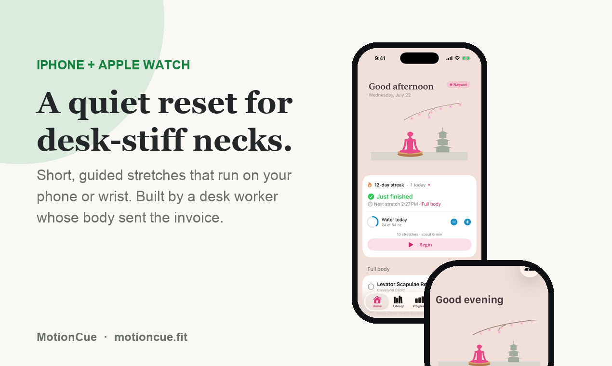
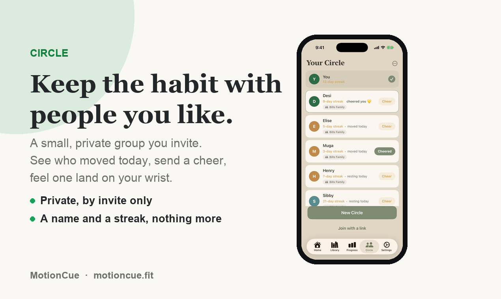
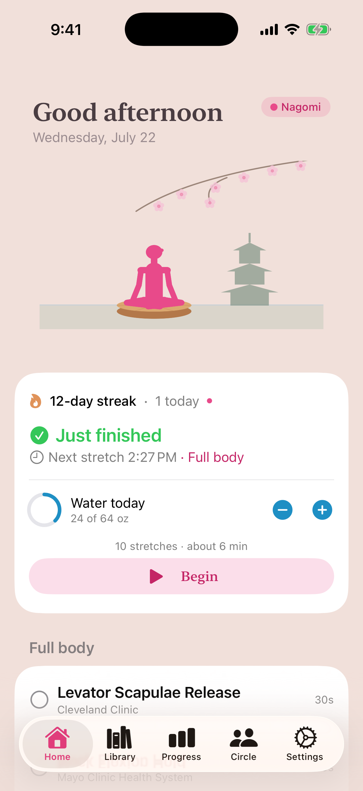
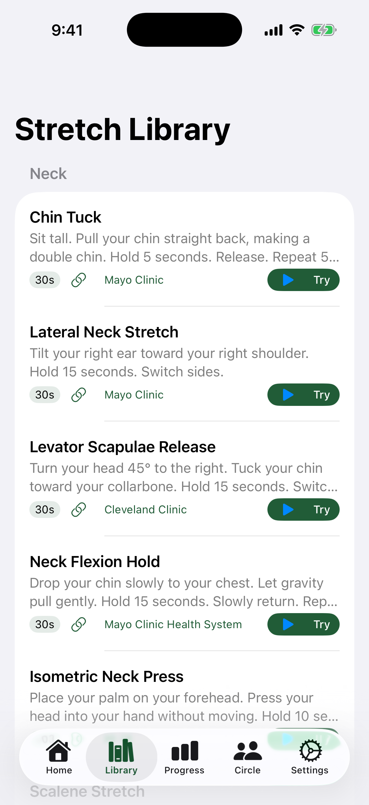
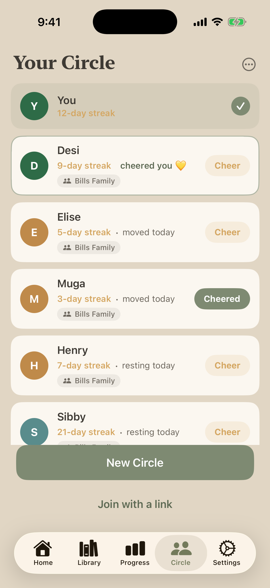

Everything on this page may be used in coverage of MotionCue. Updated July 2026.
MotionCue is a calm nudge to actually stretch during your workday: one 30-second, expert-sourced move at a time, spaced through your day so it taps you on the shoulder without yanking you out of flow. Native iPhone + Apple Watch. Every stretch cites a real source (Mayo Clinic, Cleveland Clinic, Harvard Health, APTA) with a tappable citation. Ten visual themes, each with its own composed music. Local-first and private: no accounts, no ads, no data sold, and an honest up-front price.
Name MotionCue
Platforms iPhone + Apple Watch (native)
Price Free 14-day trial, then $4.99/month or $49/year
App Store apps.apple.com/us/app/motioncue
Website motioncue.fit
Contact hello@motioncue.fit
MotionCue was built by Brian Bills of Lake Oswego, Oregon. By day he is an education consultant (principal of AcerLogic Educational Services). On the side he serves as an elected, volunteer school board member, where he authored his district's AI policy. He is not a developer.
The deeper he fell down the AI rabbit hole, the more hours he spent hunched at his desk, and his body started sending invoices: stiff neck, tight shoulders, the hunch you only notice when you finally stand up. MotionCue is the app he built, over ten months and with AI tools as his only engineering team, to pay the tab.
51 seconds, landscape 1080p. A vertical 14-second cut is below it.
Download landscape demo (MP4, 3.2 MB) · Download vertical cut (MP4, 0.6 MB)
Click any image to open it full size. All are current App Store build captures or official marks.

Hero card
Circle card
Home screen
Library
CircleMotionCue is a stretch-break app for desk workers, native to iPhone and Apple Watch. It delivers one 30-second, expert-sourced stretch at a time, with tappable citations from organizations like the Mayo Clinic and Cleveland Clinic, ten themed environments with in-house composed music, hydration tracking, and Circle, a small-group feature for keeping the habit with people you like. MotionCue is local-first and private: no accounts, no ads, no data sold. Free 14-day trial, then $4.99/month or $49/year. motioncue.fit
{kind=link}
{kind=link}
{kind=link}
{kind=link}
{kind=link}
{kind=link}